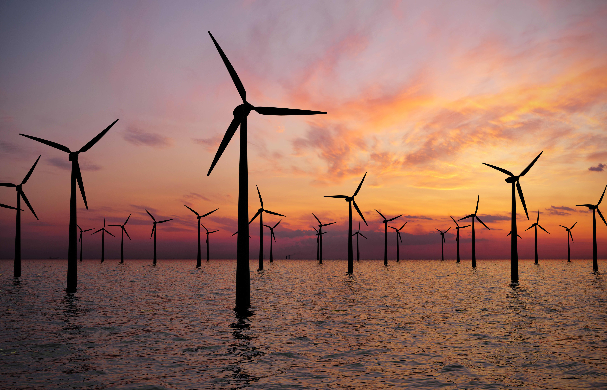
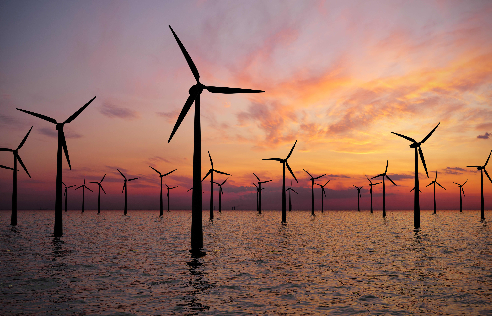

Solar Energy
Hydropower
Wind Energy
Solar energy is the process of taking radiation from the sun which can produce heat and causes a chemical reaction within solar panels which produces electricity.
The total amount of solar energy able to be harnessed in the process exceeds the world’s current and anticipated energy requirements. If suitably harnessed, this highly widespread source has the potential to satisfy all future energy needs. Solar energy is said to become increasingly used as a green energy source for its unlimited supply and nonpolluting characteristics.
Solar radiation is light – also known as electromagnetic radiation – that is emitted by the sun. While every location on Earth receives some sunlight over a year, the amount of solar radiation that reaches any one spot on the Earth’s surface varies. Solar technologies capture this radiation and turn it into useful forms of energy.
Wind energy is a form of renewable energy typically powered by the movement of wind across enormous fan-shaped structures called wind turbines. Once built, these turbines create no climate-warming greenhouse gases, making them a form of green energy.
Once called windmills, the technology used to harness the power of wind has advanced significantly over the past ten years, with the United States increasing its wind power capacity 30% year over year.
Wind turbines are simple in concept. Unlike using a fan which converts electricity into wind, turbines act in the opposite way in which wind spins the large propellors which powers a generator which converts the spin of the blades into a form of electricity.
Also known as hydroelectric power, this type of green energy uses the flow of water in rivers, streams, dams or elsewhere to produce electricity. Hydropower can even work on a small scale using the flow of water through pipes in the home or can come from evaporation, rainfall or the tides in the oceans.
Hydropower is the United States’ oldest source of green electricity. In 2022, hydropower accounted for 28.7% of U.S. renewable electricity generation.
Hydropower’s flexibility allows it to seamlessly integrate other energy sources and act as a force multiplier for other renewables, and makes it an invaluable resource for powering the grid after an outage.
U.S. conventional hydropower capacity increased 2.1 gigawatts (GW) from 2010 to 2022 due to a combination of upgrades to existing plants (1.6 GW), new projects (0.7 GW), and retirements (-0.2 GW). Hydropower generation (262 terrawatt-hours) represented 6.2% of total U.S. electricity generation and 28.7% of electricity from renewables in 2022.